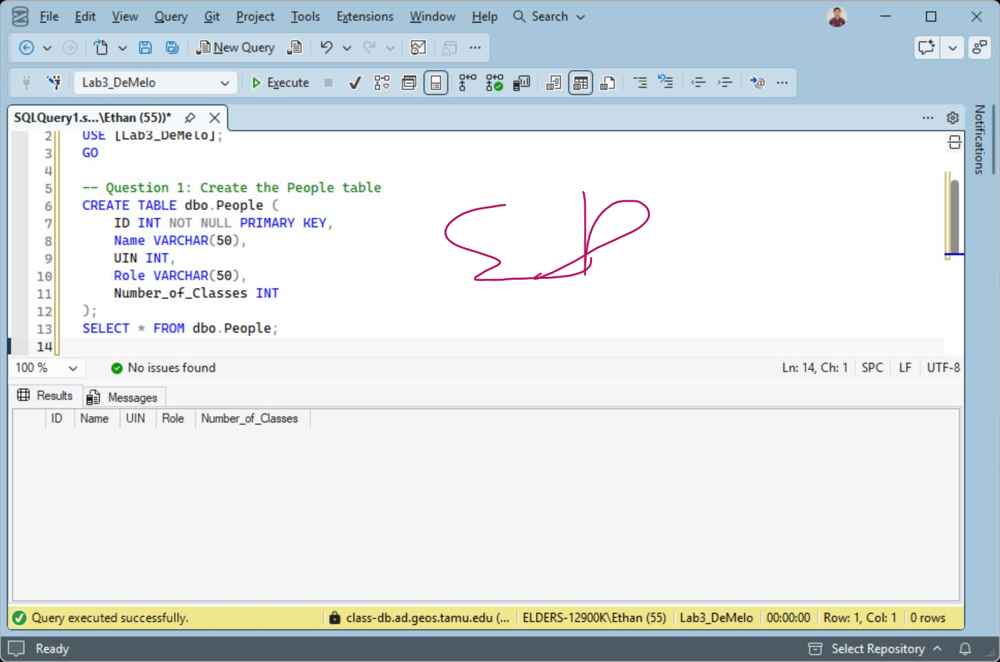
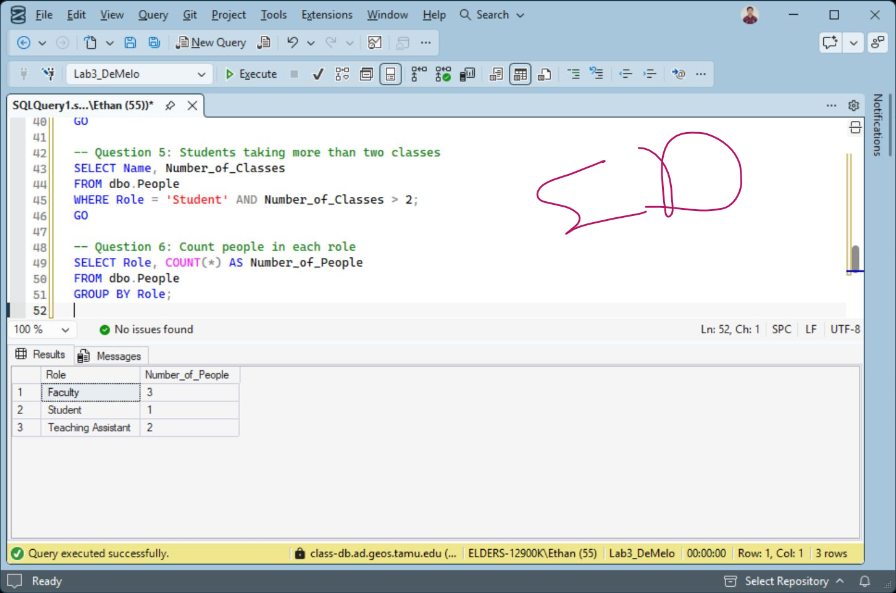

Practice records
Course-provided database tables and example records.
GEOG 391 / Labs 3 & 4 / Fall 2026
My GEOG 391 database labs practice table creation, record changes, filtering and grouped counts in SQL Server.


Course-provided database tables and example records.
Create, insert, update, select and group records.
Initialed submission screenshots document the executed statements and outputs.
Lab 3 documents SQL Server setup and connection from ArcGIS Pro. Lab 4 creates a table, inserts and updates example records, separates faculty/student results and counts roles. The gallery shows the original table-creation and grouped-query evidence.
The exercise demonstrates foundational relational operations, not ownership of a production database or the Mars Explorer backend. That project’s architecture is separately credited to Brandon Santor.